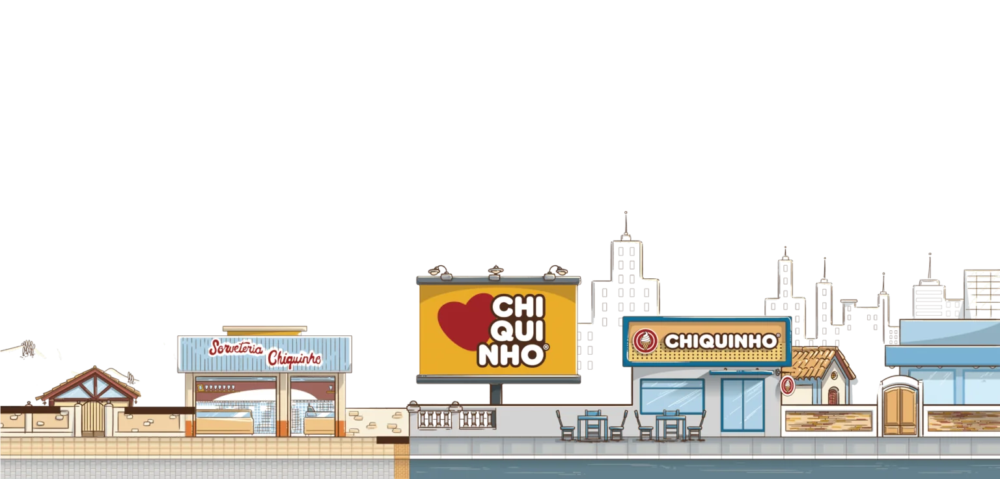

NOSSA HISTÓRIA

Linha do Tempo da Chiquinho
Em Frutal, Minas Gerais, Francisco Olímpio de Oliveira, carinhosamente conhecido como Chiquinho, inaugura uma pequena sorveteria para seu filho Isaias. Nasce assim a marca que transformaria o cenário do sorvete no Brasil.
Isaias assume a liderança da sorveteria e, com o apoio da família, começa a expandir o negócio, levando o sabor irresistível da Chiquinho para novas cidades.
A empresa inovou ao adotar o sorvete tipo “soft” como seu principal produto, diversificando o cardápio e impulsionando o crescimento da marca.
Com a marca em plena ascensão, Isaias vê a oportunidade de transformar o negócio em franquia, permitindo que mais pessoas compartilhassem do amor pelo sorvete e da excelência que a Chiquinho representa.
A Chiquinho alcança um marco histórico: está presente em todos os estados do Brasil, consolidando-se como a maior rede de sorveterias do país. Cada loja mantém o padrão de qualidade que tornou a marca uma referência no mercado.
Com mais de 927 lojas espalhadas pelo Brasil, no último ano a Chiquinho vendeu mais de 71 milhões de sorvetes e atendeu 38 milhões de clientes, consolidando sua posição de liderança e preferência entre os consumidores.
Propósito
Sermos movidos pela fé em Deus e no compromisso com o negócio que transforma e abençoa a vida de inúmeras famílias
Missão
Encantar nossos clientes ao proporcionar experiências saborosas e momentos de felicidade, com uma receita exclusiva e de altíssima qualidade, sempre acompanhada de um atendimento gentil e eficiente
Hoje, a rede tem mais de 927 lojas.
“Nosso grande diferencial está no padrão de excelência dos produtos. Estamos sempre em busca de novas opções para oferecer aos clientes uma grande variedade de sabores e combinações”, ressalta Isaias.